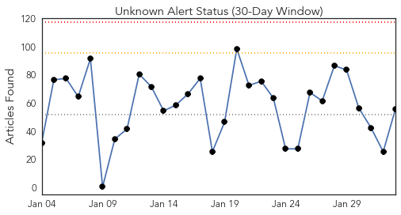
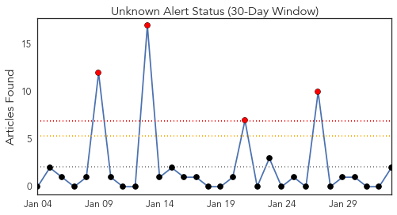
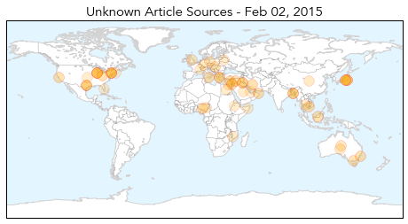

Unknown
30-Day Web Trend
0 alerts, 0 warnings

30-Day Twitter Trend
3 alerts, 0 warnings

Article Locations
Article Confidences
Top Articles:
- 0.960
- Reno Tahoe News Weather, Video -
- 0.933
- 2 die of Nipah virus in Naogaon
- 0.918
- Health agency officials respond to STD outbreak
- 0.917
- Chicago Tribune
- 0.917
- Chicago Tribune
- 0.917
- Chicago Tribune
- 0.917
- Chicago Tribune
- 0.917
- Chicago Tribune
- 0.917
- Chicago Tribune
- 0.917
- Chicago Tribune
- 0.917
- Chicago Tribune
- 0.917
- Chicago Tribune
- 0.917
- Chicago Tribune
- 0.917
- Chicago Tribune
- 0.917
- Chicago Tribune
- 0.917
- Chicago Tribune
- 0.917
- Chicago Tribune
- 0.917
- Chicago Tribune
- 0.917
- Chicago Tribune
- 0.917
- Chicago Tribune
- 0.917
- Chicago Tribune
- 0.917
- Chicago Tribune
- 0.917
- Chicago Tribune
- 0.917
- Chicago Tribune
- 0.917
- Chicago Tribune
- 0.915
- experts, National, Phnom Penh Post
- 0.871
- CSIRO employee's claim her water was contaminated with faeces rejected by tribunal
- 0.866
- Merkel says ceasefire must be restored in Ukraine
- 0.808
- West Texas News
- 0.751
- Warning over syphilis outbreak in Central Australia
- 0.734
- Crises abound in Noakhali hospital
- 0.726
- Multi Drug Resistant Bacteria Hits German Hospital, Kills 11
- 0.713
- 'Atypical' case of mad cow disease confirmed in Norway
- 0.673
- The Westside StoryThe Westside Story
- 0.673
- The Westside StoryThe Westside Story
- 0.669
- Insurer responds to ASIC concerns
- 0.626
- WHO donates medicines, medical instruments to Donetsk region
- 0.619
- Egypt: RRP6 Monthly Update - December 2014: Health - Egypt
- 0.613
- UN stepping up humanitarian efforts in Malawi’s flood-hit areas - Malawi
- 0.602
- Criticised Cameron says Saudi tip-off ‘saved British lives’
- 0.602
- DSK trial to offer ‘great show’, says brothel owner
- 0.602
- Iran launches Holocaust denial cartoon contest
- 0.602
- Head of UN Gaza inquiry to quit over Israeli criticism
- 0.602
- Greece’s anti-austerity drive gets boost from Washington
- 0.602
- Far right wins first round of French by-election
- 0.602
- Al-Jazeera journalist's colleagues still held in Egypt
- 0.602
- Egypt sentences 183 Brotherhood supporters to death
- 0.602
- Bomb rocks Nigerian city minutes after presidential rally
- 0.602
- ‘Accountant of Auschwitz’ to go on trial over camp deaths
- 0.596
- No reasons for ASF existence in Belarus now
Showing top 50 articles...
Top Tweets:
- 0.517
- RT: ISG - flu immunisation or masking if granted exemption for all health and residential care workers
Swine Flu
30-Day Web Trend
9 alerts, 5 warnings

30-Day Twitter Trend
0 alerts, 0 warnings

Article Locations

Article Confidences

Top Articles:
- 1.000
- Gujarat Records Another Swine Flu Death, 39 Fresh Cases in a Single Day; First H1N1 Death in Odisha
- 0.999
- After ex-CM, Rajasthan's home minister hit by swine flu
- 0.999
- 191 swine flu deaths took place in India in January 2015: Govt
- 0.999
- No let up in swine flu surge in Telangana
- 0.998
- 1 more suspected swine flu death reported, 3 admitted on Sunday
- 0.996
- Breathalyser Tests Despite Flu Scare
- 0.996
- Rajasthan home minister, AP MP down with swine flu
- 0.993
- Five more test positive for swine flu
- 0.991
- 10 More Die of Swine Flu in Rajasthan
- 0.991
- Mohali records first swine flu death
- 0.972
- Med Teams land in Sampatti After 20 Fall Ill in Single Day
- 0.949
- Telangana: Swine Flu Claims 31 Lives in a Month
- 0.943
- Swine flu death toll hits 42 in Gujarat in January
- 0.936
- Gurgaon school children to get swine flu prevention lessons at assembly
- 0.932
- ‘No need to panic on swine flu’
- 0.926
- Democrats Redeemed? Republicans More Anti-Vaccine, Says Paper
- 0.886
- Confidence In Government Linked To Willingness To Vaccinate
- 0.845
- Healthy initiative by students
Top Tweets:
-
No tweets found for Feb 02, 2015